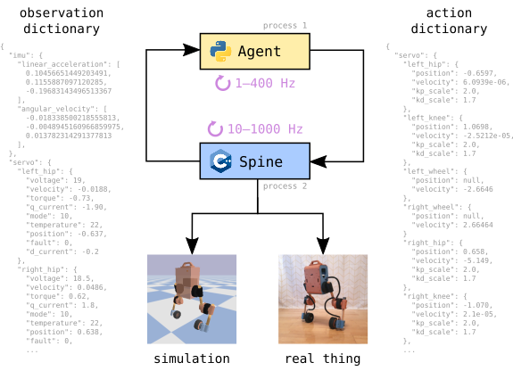

- Generated by
 1.9.1
1.9.1
|
upkie
5.2.0
Open-source wheeled biped robots
|
Upkie's code is organized into spines, which communicate with the simulation or mjbots actuators, and agents, the programs that implement robot behaviors. We use Bazel to build spines, both for simulation on your development computer or for running on the robot's Raspberry Pi. Bazel does not install anything on your system: it fetches dependencies with specific versions and builds them locally, making sure the code stays consistent over time.
Upkie implements an action-observation loop to control robots from a standalone "agent" process, like this:

The agent can be a simple Python script with few dependencies. This separation between agent and spine provides a robot/simulation switch to train or test agents in a simulation spine (such as the Bullet spine below) before running them on the real system.
More accurately, Upkie's software implements an inter-process communication (IPC) protocol implemented in the C++ and Python libraries. It is suitable for real-time but not high-frequency (> 1000 Hz) performance. This is fine for balancing and locomotion on Upkies, as there is theoretical and empirical evidence suggesting they can balance themselves as leisurely as 20 Hz. And if you are wondering whether Python is suitable for real-time applications, we were too! Until we tried it out.
All design decisions have their pros and cons. Here is a list of features and non-features to give you an overview of those we did in this project:
The Bullet spine runs an agent in the Bullet 3 simulator. We can start this spine as a standalone process and let it run waiting for agents to connect. The simulation script will run pre-compiled binaries if possible:
To build and run the simulation from source, setup your build environment then call the equivalent Bazel instruction:
Bazel is the build system used in Upkie for spines. Check out simulation options by appending the help flag -h to the above command.
The pi3hat spine is the one that runs on the real robot, where a pi3hat r4.5 is mounted on top of the onboard Raspberry Pi computer. To run this spine, you can either download it from GitHub, or build it locally from source.
Assuming your robot is connected to the Internet, you can get the latest pi3hat spine from GitHub using the upkie_tool command-line utility:
Once the spine is installed, start it from a command-line on the robot:
You can then run any agent in a separate shell on the robot, for example the wheel balancer:
To build the pi3hat locally from source, then upload it to Raspberry Pi, use the Makefile at the root of the repository:
Next, log into the Pi and run a pi3hat spine:
Once the spine is running, you can run any agent in a separate shell on the robot, for example the wheel balancer:
The mock spine is useful to run an agent on the robot without firing up the actuators. It works exactly as the pi3hat spine, replacing "pi3hat" with "mock" in all instructions above.